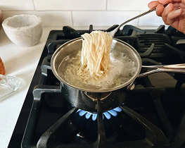
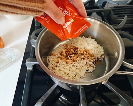
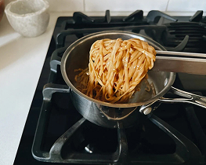
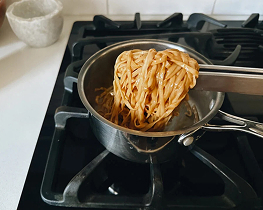
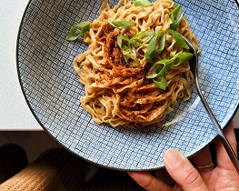

“Depuis 20 ans, je régale les foules dans mon restaurant sur le Bosphore. Mais il me manquait une recette unique, celle qui me rendrait immortel.
Un soir, un vieil homme encapuchonné frappa à ma porte et me tendit un parchemin. Une carte menant à un ingrédient secret, caché dans le Grand Bazar d’Istanbul. Intrigué, je partis sans hésiter.
Là-bas, une vieille femme m’attendait. Elle me donna une farine noire, issue des cendres d’un volcan endormi. "Si tu sais l’utiliser, tes nouilles deviendront légendaires.”
De retour en cuisine, je pétris, étirai, ajoutai une touche de sumac et un ingrédient secret. Quand je servis mon plat, le silence tomba. Puis l’explosion de saveurs fit briller les yeux de mes clients.
Depuis, on murmure à Istanbul :
“Les nouilles du Turkish Monster ont le goût du Bosphore lui-même, un mélange de mystère et de génie.”
Turkish Monster
Nouilles au beurre de sésame
Plat du jour
Les Nouilles au beurre de sésame
by TURKISH MONSTER
Ingrédients
12 minutes

1 personne
- 1 paquet de nouille
- 1 cuillère à soupe de beurre
- 1 à 2 cuillères à café de miel
- 1/2 cuillère à soupe d'huile de sésame grillée
- Une éclaboussure d'eau
- Facultatives : oignon vert, graines de sésame, chili crisp, togarashi
Faites vos nouilles avec moi
1
Cuire les nouilles
Choisissez vos nouilles préférés, mes préférés sont celles de chez Buldak. Nous les cuisinons essentiellement comme indiqué, en faisant bouillir des nouilles et en ajoutant de la sauce.
2
Ajoutez le sachet de sauce
Hoop! Voici le paquet de sauce
3
Ajoutez le beurre, l’huile de sésame et le miel.
Voici maintenant les petits plus qui rendent ce plat vraiment magique. Je ne le mesure jamais : juste du beurre de noix, un peu de miel et d’huile de sésame. Ensuite, je remue le tout avec des pinces et j’ajoute un peu d’eau si ça devient trop collant.
 

4
C'est fini ! Miam !
Garnissez de chili croustillant, de graines de sésame ou d'une sorte de pincée épicée, ainsi que d'oignons verts... INCROYABLE petit déjeuner, dîner ou collation rapide.
